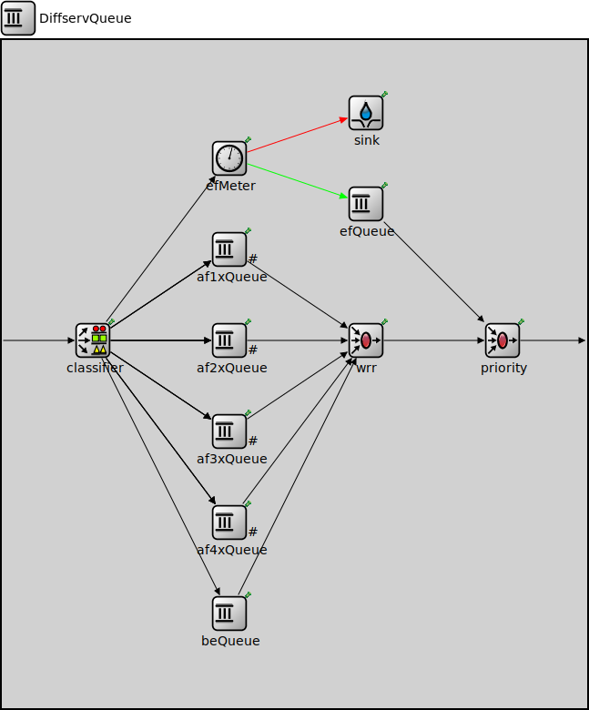

Package: inet.networklayer.diffserv
DiffservQueue
compound moduleThis is an example queue, that can be used in interfaces of DS core and edge nodes to support the AFxy (RFC 2597) and EF (RFC 3246) PHBs.
The incoming packets are first classified according to their DSCP field. DSCPs other than AFxy and EF are handled as BE (best effort).
EF packets are stored in a dedicated queue, and served first when a packet is requested. Because they can preempt the other queues, the rate of the EF packets should be limited to a fraction of the bandwith of the link. This is achieved by metering the EF traffic with a token bucket meter and dropping packets that does not conform to the traffic profile.
There are other queues for AFx classes and BE. The AFx queues use RED to implement 3 different drop priorities within the class. BE packets are stored in a drop tail queue. Packets from AFxy and BE queues are sheduled by a WRR scheduler, which ensures that the remaining bandwith is allocated among the classes according to the specified weights.
Usage diagram
The following diagram shows usage relationships between types. Unresolved types are missing from the diagram.
Inheritance diagram
The following diagram shows inheritance relationships for this type. Unresolved types are missing from the diagram.
Extends
| Name | Type | Description |
|---|---|---|
| CompoundPacketQueueBase | compound module |
This compound module serves as a base module for complex packet queues formed by combining several queueing components. |
Parameters
| Name | Type | Default value | Description |
|---|---|---|---|
| displayStringTextFormat | string | "contains %p pk (%l) pushed %u created %c\n pulled %o removed %r dropped %d" |
determines the text that is written on top of the submodule |
| packetCapacity | int | -1 |
maximum number of packets in the queue, no limit by default |
| dataCapacity | int | -1b |
maximum total length of packets in the queue, no limit by default |
| dropperClass | string | "" |
determines which packets are dropped when the queue is overloaded, packets are not dropped by default; the parameter must be the name of a C++ class which implements the IPacketDropperFunction C++ interface and is registered via Register_Class |
| interfaceTableModule | string |
Properties
| Name | Value | Description |
|---|---|---|
| display | i=block/queue | |
| class | CompoundPacketQueueBase | |
| defaultStatistic | queueLength:vector |
Gates
| Name | Direction | Size | Description |
|---|---|---|---|
| in | input | ||
| out | output |
Signals
| Name | Type | Unit |
|---|---|---|
| packetRemoved | inet::Packet | |
| packetPushStarted | inet::Packet | |
| packetDropped | inet::Packet | |
| packetPushEnded | inet::Packet? | |
| packetPulled | inet::Packet |
Statistics
| Name | Title | Source | Record | Unit | Interpolation Mode |
|---|---|---|---|---|---|
| queueBitLength | queue bit length | warmup(atomic(constant0(localSignal(packetPushEnded)) + sum(packetLength(localSignal(packetPushStarted))) - sum(packetLength(localSignal(packetPulled))) - sum(packetLength(localSignal(packetRemoved))) - sum(packetLength(localSignal(packetDropped))))) | last, max, timeavg, vector | b | sample-hold |
| queueLength | queue length | warmup(atomic(constant0(localSignal(packetPushEnded)) + count(localSignal(packetPushStarted)) - count(localSignal(packetPulled)) - count(localSignal(packetRemoved)) - count(localSignal(packetDropped)))) | last, max, timeavg, vector | pk | sample-hold |
| droppedPacketsQueueOverflow | dropped packets: queue overflow | packetDropReasonIsQueueOverflow(localSignal(packetDropped)) | count | pk | none |
| queueingTime | queueing times | queueingTime(localSignal(packetPulled)) | histogram, vector | s | none |
| incomingDataRate | incoming datarate | throughput(localSignal(packetPushStarted)) | vector | bps | linear |
| flowQueueingTime | flow queueing times | queueingTime(demuxFlow(localSignal(packetPulled))) | histogram, vector | s | none |
| incomingPacketLengths | incoming packet lengths | packetLength(localSignal(packetPushStarted)) | sum, histogram, vector | b | none |
| flowIncomingDataRate | flow specific incoming data rate | throughput(flowPacketLength(demuxFlow(localSignal(packetPushStarted)))) | vector | bps | linear |
| outgoingDataRate | outgoing datarate | throughput(localSignal(packetPulled)) | vector | bps | linear |
| outgoingPacketLengths | outgoing packet lengths | packetLength(localSignal(packetPulled)) | sum, histogram, vector | b | none |
| droppedPacketLengthsQueueOverflow | dropped packet lengths: queue overflow | packetLength(packetDropReasonIsQueueOverflow(localSignal(packetDropped))) | sum, vector | b | none |
| flowOutgoingDataRate | flow specific outgoing data rate | throughput(flowPacketLength(demuxFlow(localSignal(packetPulled)))) | vector | bps | linear |
| incomingPackets | incoming packets | localSignal(packetPushStarted) | count | pk | |
| outgoingPackets | outgoing packets | localSignal(packetPulled) | count | pk |
Unassigned submodule parameters
| Name | Type | Default value | Description |
|---|---|---|---|
| classifier.displayStringTextFormat | string | "classified %p pk (%l)" |
determines the text that is written on top of the submodule |
| classifier.reverseOrder | bool | false | |
| efMeter.interfaceTableModule | string |
The path to the InterfaceTable module |
|
| efMeter.cir | string | "10%" |
committed information rate, either absolute bitrate (e.g. "100kbps"), or relative to the link's datarate (e.g. "20%") |
| efMeter.cbs | int | 5000B |
committed burst size |
| efMeter.colorAwareMode | bool | false |
enables color-aware mode |
| sink.displayStringTextFormat | string | "received %p pk (%l)" |
determines the text that is written on top of the submodule |
| sink.clockModule | string | "" |
relative path of a module that implements IClock(1,2); optional |
| sink.initialConsumptionOffset | double | 0s |
initial duration before which packets are not consumed |
| sink.consumptionInterval | double | 0s |
elapsed time between subsequent packets allowed to be pushed by the connected packet producer, 0 means any number of packets can be pushed at the same simulation time |
| sink.scheduleForAbsoluteTime | bool | true |
when a clock is used relative means that setting the clock will not affect the simulation time of the event |
| efQueue.displayStringTextFormat | string | "contains %p pk (%l) pushed %u\npulled %o removed %r dropped %d" |
determines the text that is written on top of the submodule |
| efQueue.packetCapacity | int | 5 |
maximum number of packets in the queue, no limit by default |
| efQueue.dataCapacity | int | -1b |
maximum total length of packets in the queue, no limit by default |
| efQueue.dropperClass | string | "inet::queueing::PacketAtCollectionEndDropper" |
determines which packets are dropped when the queue is overloaded, packets are not dropped by default; the parameter must be the name of a C++ class which implements the IPacketDropperFunction C++ interface and is registered via Register_Class |
| efQueue.comparatorClass | string | "" |
determines the order of packets in the queue, insertion order by default; the parameter must be the name of a C++ class which implements the IPacketComparatorFunction C++ interface and is registered via Register_Class |
| efQueue.bufferModule | string | "" |
relative module path to the IPacketBuffer module used by this queue, implicit buffer by default |
| af1xQueue.red1.displayStringTextFormat | string | "dropped %d/%p pk (%k/%l)" |
determines the text that is written on top of the submodule |
| af1xQueue.red1.backpressure | bool | false | |
| af1xQueue.red1.pkrate | double | 150 |
average packet rate for calculations when queue is empty |
| af1xQueue.red1.useEcn | bool | false |
if enabled, packets are marked with ECN if applicable |
| af1xQueue.red1.packetCapacity | int | int(maxth) |
packets are dropped if queue length is greater |
| af1xQueue.red2.displayStringTextFormat | string | "dropped %d/%p pk (%k/%l)" |
determines the text that is written on top of the submodule |
| af1xQueue.red2.backpressure | bool | false | |
| af1xQueue.red2.pkrate | double | 150 |
average packet rate for calculations when queue is empty |
| af1xQueue.red2.useEcn | bool | false |
if enabled, packets are marked with ECN if applicable |
| af1xQueue.red2.packetCapacity | int | int(maxth) |
packets are dropped if queue length is greater |
| af1xQueue.red3.displayStringTextFormat | string | "dropped %d/%p pk (%k/%l)" |
determines the text that is written on top of the submodule |
| af1xQueue.red3.backpressure | bool | false | |
| af1xQueue.red3.pkrate | double | 150 |
average packet rate for calculations when queue is empty |
| af1xQueue.red3.useEcn | bool | false |
if enabled, packets are marked with ECN if applicable |
| af1xQueue.red3.packetCapacity | int | int(maxth) |
packets are dropped if queue length is greater |
| af1xQueue.mux.displayStringTextFormat | string | "passed %p pk (%l)" |
determines the text that is written on top of the submodule |
| af1xQueue.mux.forwardServiceRegistration | bool | true | |
| af1xQueue.mux.forwardProtocolRegistration | bool | true | |
| af1xQueue.queue.displayStringTextFormat | string | "contains %p pk (%l) pushed %u\npulled %o removed %r dropped %d" |
determines the text that is written on top of the submodule |
| af1xQueue.queue.packetCapacity | int | -1 |
maximum number of packets in the queue, no limit by default |
| af1xQueue.queue.dataCapacity | int | -1b |
maximum total length of packets in the queue, no limit by default |
| af1xQueue.queue.dropperClass | string | "" |
determines which packets are dropped when the queue is overloaded, packets are not dropped by default; the parameter must be the name of a C++ class which implements the IPacketDropperFunction C++ interface and is registered via Register_Class |
| af1xQueue.queue.comparatorClass | string | "" |
determines the order of packets in the queue, insertion order by default; the parameter must be the name of a C++ class which implements the IPacketComparatorFunction C++ interface and is registered via Register_Class |
| af1xQueue.queue.bufferModule | string | "" |
relative module path to the IPacketBuffer module used by this queue, implicit buffer by default |
| af2xQueue.red1.displayStringTextFormat | string | "dropped %d/%p pk (%k/%l)" |
determines the text that is written on top of the submodule |
| af2xQueue.red1.backpressure | bool | false | |
| af2xQueue.red1.pkrate | double | 150 |
average packet rate for calculations when queue is empty |
| af2xQueue.red1.useEcn | bool | false |
if enabled, packets are marked with ECN if applicable |
| af2xQueue.red1.packetCapacity | int | int(maxth) |
packets are dropped if queue length is greater |
| af2xQueue.red2.displayStringTextFormat | string | "dropped %d/%p pk (%k/%l)" |
determines the text that is written on top of the submodule |
| af2xQueue.red2.backpressure | bool | false | |
| af2xQueue.red2.pkrate | double | 150 |
average packet rate for calculations when queue is empty |
| af2xQueue.red2.useEcn | bool | false |
if enabled, packets are marked with ECN if applicable |
| af2xQueue.red2.packetCapacity | int | int(maxth) |
packets are dropped if queue length is greater |
| af2xQueue.red3.displayStringTextFormat | string | "dropped %d/%p pk (%k/%l)" |
determines the text that is written on top of the submodule |
| af2xQueue.red3.backpressure | bool | false | |
| af2xQueue.red3.pkrate | double | 150 |
average packet rate for calculations when queue is empty |
| af2xQueue.red3.useEcn | bool | false |
if enabled, packets are marked with ECN if applicable |
| af2xQueue.red3.packetCapacity | int | int(maxth) |
packets are dropped if queue length is greater |
| af2xQueue.mux.displayStringTextFormat | string | "passed %p pk (%l)" |
determines the text that is written on top of the submodule |
| af2xQueue.mux.forwardServiceRegistration | bool | true | |
| af2xQueue.mux.forwardProtocolRegistration | bool | true | |
| af2xQueue.queue.displayStringTextFormat | string | "contains %p pk (%l) pushed %u\npulled %o removed %r dropped %d" |
determines the text that is written on top of the submodule |
| af2xQueue.queue.packetCapacity | int | -1 |
maximum number of packets in the queue, no limit by default |
| af2xQueue.queue.dataCapacity | int | -1b |
maximum total length of packets in the queue, no limit by default |
| af2xQueue.queue.dropperClass | string | "" |
determines which packets are dropped when the queue is overloaded, packets are not dropped by default; the parameter must be the name of a C++ class which implements the IPacketDropperFunction C++ interface and is registered via Register_Class |
| af2xQueue.queue.comparatorClass | string | "" |
determines the order of packets in the queue, insertion order by default; the parameter must be the name of a C++ class which implements the IPacketComparatorFunction C++ interface and is registered via Register_Class |
| af2xQueue.queue.bufferModule | string | "" |
relative module path to the IPacketBuffer module used by this queue, implicit buffer by default |
| af3xQueue.red1.displayStringTextFormat | string | "dropped %d/%p pk (%k/%l)" |
determines the text that is written on top of the submodule |
| af3xQueue.red1.backpressure | bool | false | |
| af3xQueue.red1.pkrate | double | 150 |
average packet rate for calculations when queue is empty |
| af3xQueue.red1.useEcn | bool | false |
if enabled, packets are marked with ECN if applicable |
| af3xQueue.red1.packetCapacity | int | int(maxth) |
packets are dropped if queue length is greater |
| af3xQueue.red2.displayStringTextFormat | string | "dropped %d/%p pk (%k/%l)" |
determines the text that is written on top of the submodule |
| af3xQueue.red2.backpressure | bool | false | |
| af3xQueue.red2.pkrate | double | 150 |
average packet rate for calculations when queue is empty |
| af3xQueue.red2.useEcn | bool | false |
if enabled, packets are marked with ECN if applicable |
| af3xQueue.red2.packetCapacity | int | int(maxth) |
packets are dropped if queue length is greater |
| af3xQueue.red3.displayStringTextFormat | string | "dropped %d/%p pk (%k/%l)" |
determines the text that is written on top of the submodule |
| af3xQueue.red3.backpressure | bool | false | |
| af3xQueue.red3.pkrate | double | 150 |
average packet rate for calculations when queue is empty |
| af3xQueue.red3.useEcn | bool | false |
if enabled, packets are marked with ECN if applicable |
| af3xQueue.red3.packetCapacity | int | int(maxth) |
packets are dropped if queue length is greater |
| af3xQueue.mux.displayStringTextFormat | string | "passed %p pk (%l)" |
determines the text that is written on top of the submodule |
| af3xQueue.mux.forwardServiceRegistration | bool | true | |
| af3xQueue.mux.forwardProtocolRegistration | bool | true | |
| af3xQueue.queue.displayStringTextFormat | string | "contains %p pk (%l) pushed %u\npulled %o removed %r dropped %d" |
determines the text that is written on top of the submodule |
| af3xQueue.queue.packetCapacity | int | -1 |
maximum number of packets in the queue, no limit by default |
| af3xQueue.queue.dataCapacity | int | -1b |
maximum total length of packets in the queue, no limit by default |
| af3xQueue.queue.dropperClass | string | "" |
determines which packets are dropped when the queue is overloaded, packets are not dropped by default; the parameter must be the name of a C++ class which implements the IPacketDropperFunction C++ interface and is registered via Register_Class |
| af3xQueue.queue.comparatorClass | string | "" |
determines the order of packets in the queue, insertion order by default; the parameter must be the name of a C++ class which implements the IPacketComparatorFunction C++ interface and is registered via Register_Class |
| af3xQueue.queue.bufferModule | string | "" |
relative module path to the IPacketBuffer module used by this queue, implicit buffer by default |
| af4xQueue.red1.displayStringTextFormat | string | "dropped %d/%p pk (%k/%l)" |
determines the text that is written on top of the submodule |
| af4xQueue.red1.backpressure | bool | false | |
| af4xQueue.red1.pkrate | double | 150 |
average packet rate for calculations when queue is empty |
| af4xQueue.red1.useEcn | bool | false |
if enabled, packets are marked with ECN if applicable |
| af4xQueue.red1.packetCapacity | int | int(maxth) |
packets are dropped if queue length is greater |
| af4xQueue.red2.displayStringTextFormat | string | "dropped %d/%p pk (%k/%l)" |
determines the text that is written on top of the submodule |
| af4xQueue.red2.backpressure | bool | false | |
| af4xQueue.red2.pkrate | double | 150 |
average packet rate for calculations when queue is empty |
| af4xQueue.red2.useEcn | bool | false |
if enabled, packets are marked with ECN if applicable |
| af4xQueue.red2.packetCapacity | int | int(maxth) |
packets are dropped if queue length is greater |
| af4xQueue.red3.displayStringTextFormat | string | "dropped %d/%p pk (%k/%l)" |
determines the text that is written on top of the submodule |
| af4xQueue.red3.backpressure | bool | false | |
| af4xQueue.red3.pkrate | double | 150 |
average packet rate for calculations when queue is empty |
| af4xQueue.red3.useEcn | bool | false |
if enabled, packets are marked with ECN if applicable |
| af4xQueue.red3.packetCapacity | int | int(maxth) |
packets are dropped if queue length is greater |
| af4xQueue.mux.displayStringTextFormat | string | "passed %p pk (%l)" |
determines the text that is written on top of the submodule |
| af4xQueue.mux.forwardServiceRegistration | bool | true | |
| af4xQueue.mux.forwardProtocolRegistration | bool | true | |
| af4xQueue.queue.displayStringTextFormat | string | "contains %p pk (%l) pushed %u\npulled %o removed %r dropped %d" |
determines the text that is written on top of the submodule |
| af4xQueue.queue.packetCapacity | int | -1 |
maximum number of packets in the queue, no limit by default |
| af4xQueue.queue.dataCapacity | int | -1b |
maximum total length of packets in the queue, no limit by default |
| af4xQueue.queue.dropperClass | string | "" |
determines which packets are dropped when the queue is overloaded, packets are not dropped by default; the parameter must be the name of a C++ class which implements the IPacketDropperFunction C++ interface and is registered via Register_Class |
| af4xQueue.queue.comparatorClass | string | "" |
determines the order of packets in the queue, insertion order by default; the parameter must be the name of a C++ class which implements the IPacketComparatorFunction C++ interface and is registered via Register_Class |
| af4xQueue.queue.bufferModule | string | "" |
relative module path to the IPacketBuffer module used by this queue, implicit buffer by default |
| beQueue.displayStringTextFormat | string | "contains %p pk (%l) pushed %u\npulled %o removed %r dropped %d" |
determines the text that is written on top of the submodule |
| beQueue.packetCapacity | int | 100 |
maximum number of packets in the queue, no limit by default |
| beQueue.dataCapacity | int | -1b |
maximum total length of packets in the queue, no limit by default |
| beQueue.dropperClass | string | "inet::queueing::PacketAtCollectionEndDropper" |
determines which packets are dropped when the queue is overloaded, packets are not dropped by default; the parameter must be the name of a C++ class which implements the IPacketDropperFunction C++ interface and is registered via Register_Class |
| beQueue.comparatorClass | string | "" |
determines the order of packets in the queue, insertion order by default; the parameter must be the name of a C++ class which implements the IPacketComparatorFunction C++ interface and is registered via Register_Class |
| beQueue.bufferModule | string | "" |
relative module path to the IPacketBuffer module used by this queue, implicit buffer by default |
| wrr.displayStringTextFormat | string | "scheduled %p pk (%l)" |
determines the text that is written on top of the submodule |
| wrr.reverseOrder | bool | false | |
| wrr.weights | string | "1 1 1 1 1" | |
| priority.displayStringTextFormat | string | "scheduled %p pk (%l)" |
determines the text that is written on top of the submodule |
| priority.reverseOrder | bool | false |
Source code
// // This is an example queue, that can be used in // interfaces of DS core and edge nodes to support // the AFxy (RFC 2597) and EF (RFC 3246) PHBs. // // The incoming packets are first classified according to // their DSCP field. DSCPs other than AFxy and EF are handled // as BE (best effort). // // EF packets are stored in a dedicated queue, and served first // when a packet is requested. Because they can preempt the other // queues, the rate of the EF packets should be limited to a fraction // of the bandwith of the link. This is achieved by metering the EF // traffic with a token bucket meter and dropping packets that // does not conform to the traffic profile. // // There are other queues for AFx classes and BE. The AFx queues // use RED to implement 3 different drop priorities within the class. // BE packets are stored in a drop tail queue. // Packets from AFxy and BE queues are sheduled by a WRR scheduler, // which ensures that the remaining bandwith is allocated among the classes // according to the specified weights. // // @see ~AFxyQueue // module DiffservQueue extends CompoundPacketQueueBase { parameters: string interfaceTableModule; *.interfaceTableModule = default(absPath(this.interfaceTableModule)); submodules: classifier: BehaviorAggregateClassifier { dscps = "EF AF11 AF12 AF13 AF21 AF22 AF23 AF31 AF32 AF33 AF41 AF42 AF43"; @display("p=100,330"); } efMeter: TokenBucketMeter { cir = default("10%"); // reserved EF bandwith as percentage of datarate of the interface cbs = default(5000B); // 5 1000B packets @display("p=250,130"); } sink: PassivePacketSink { @display("p=400,80"); } efQueue: DropTailQueue { packetCapacity = default(5); // keep low, for low delay and jitter @display("p=400,180"); } af1xQueue: AFxyQueue { @display("p=250,230"); } af2xQueue: AFxyQueue { @display("p=250,330"); } af3xQueue: AFxyQueue { @display("p=250,430"); } af4xQueue: AFxyQueue { @display("p=250,530"); } beQueue: DropTailQueue { @display("p=250,630"); } wrr: WrrScheduler { weights = default("1 1 1 1 1"); @display("p=400,330"); } priority: PriorityScheduler { @display("p=550,330"); } connections: in --> classifier.in; classifier.out++ --> efMeter.in; classifier.out++ --> af1xQueue.afx1In; classifier.out++ --> af1xQueue.afx2In; classifier.out++ --> af1xQueue.afx3In; classifier.out++ --> af2xQueue.afx1In; classifier.out++ --> af2xQueue.afx2In; classifier.out++ --> af2xQueue.afx3In; classifier.out++ --> af3xQueue.afx1In; classifier.out++ --> af3xQueue.afx2In; classifier.out++ --> af3xQueue.afx3In; classifier.out++ --> af4xQueue.afx1In; classifier.out++ --> af4xQueue.afx2In; classifier.out++ --> af4xQueue.afx3In; classifier.defaultOut --> beQueue.in; efMeter.greenOut --> { @display("ls=green"); } --> efQueue.in; efMeter.redOut --> { @display("ls=red"); } --> sink.in; af1xQueue.out --> wrr.in++; af2xQueue.out --> wrr.in++; af3xQueue.out --> wrr.in++; af4xQueue.out --> wrr.in++; beQueue.out --> wrr.in++; efQueue.out --> priority.in++; wrr.out --> priority.in++; priority.out --> out; }File: src/inet/networklayer/diffserv/DiffservQueue.ned
 This documentation is released under the Creative Commons license
This documentation is released under the Creative Commons license